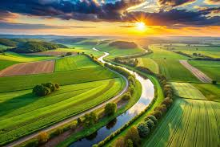

Conectando você à natureza com sabor e simplicidade 🌱
O Sítio Doce Campo é uma propriedade familiar localizada no interior de Minas Gerais. Aqui cultivamos alimentos com carinho e oferecemos experiências únicas para quem busca paz e natureza.
Produzida com morangos frescos do sítio. 100% natural.
Alface, rúcula, cenoura e muito mais, direto da horta.
Galinha criada solta, ovos frescos todos os dias.
Coletado de abelhas nativas. Puro e sem aditivos.
Venha viver um dia no campo com atividades como:
Agende uma visita ou faça seu pedido:
📱 Fale conosco pelo WhatsApp